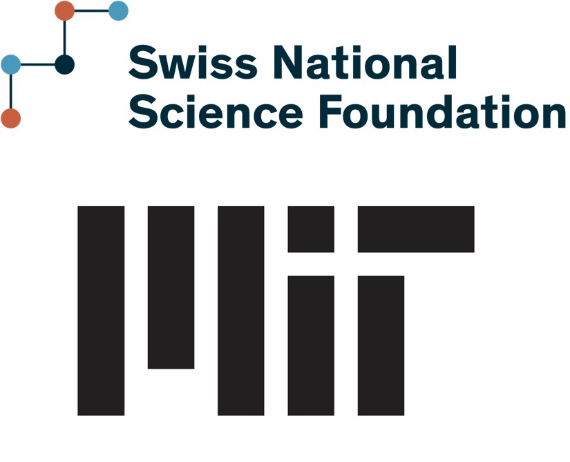

Medhat Elmorsy
Building the experiments that tell us whether our seismic models are right.
Postdoctoral Fellow, Department of Civil and Environmental Engineering,
Massachusetts Institute of Technology
SNSF Postdoc.Mobility Fellow · Cambridge, MA ·
melmorsy@mit.edu
My work sits at the intersection of earthquake engineering, structural dynamics, and digital construction. I combine centrifuge shake table testing, additive manufacturing, and nonlinear simulation to produce benchmark experimental data that numerical models can actually be validated against, and I use that evidence to design better structures — from optimized reinforced concrete load paths to low-cost earthquake-resistant housing.
I hold a Doctor of Science from ETH Zurich, an M.S. in Civil Engineering from the University of Alaska Anchorage, and a B.S. in Civil Engineering from Mansoura University, where I graduated first in my class.
Research directions
- Benchmark experiments for validating seismic models
Centrifuge shake table tests of many identical small-scale structures, so models can be checked against scatter rather than a single specimen.
- Additive manufacturing for small-scale reinforced concrete
3D-printed steel reinforcement and matched micro-concrete, characterized from bond behavior up to cyclic tests of columns and joints.
- Seismic topology optimization and robotic prototyping
Bimodular optimization of concrete structures under earthquake loading, with the resulting layouts physically prototyped.
- Affordable earthquake-resistant construction
Interlocking compressed earth block dwellings and low-cost isolation, designed together as one system.
- Modeling uncertainty and how it propagates
How much of a shifted fragility curve is the building, and how much is the modeler.
News

Started an SNSF Postdoc.Mobility fellowship at MIT
Two years of Swiss NSF funding for seismic topology optimization and physical prototyping of reinforced concrete using additive manufacturing and robotic fabrication.
URM benchmark dataset published in Earthquake Spectra
Centrifuge shake table tests of 3D-printed unreinforced masonry structures, released as an open benchmark for validating numerical models. See [J1]
Interlocking-block dwellings paper in Construction and Building Materials
Shear behavior and centrifuge seismic modeling of corbel dwellings built from interlocking compressed earth blocks, aimed at affordable seismic-resistant housing. See [J2]
Selected publications
- J1 Benchmark dataset from centrifuge shake table tests of 3D-printed URM structures for seismic model validation. Earthquake Spectra, 2026.
- J2 Shear behavior and centrifuge seismic modeling of sustainable corbel dwellings with interlocking blocks. Construction and Building Materials, 2026.
- J3 Impact of beam-column joint modeling uncertainties on the seismic response of low-rise RC frames. Earthquake Engineering & Structural Dynamics, 2025.
- J4 Cyclic behavior of physical models of reinforced concrete columns built with additive manufacturing. Journal of Structural Engineering, 2025.